Local & Global Model-Agnostic Methods
Modern ML models — random forests, gradient boosting, neural networks — are powerful but opaque. A single prediction may depend on hundreds of features through highly non-linear interactions.
We want to answer questions like:
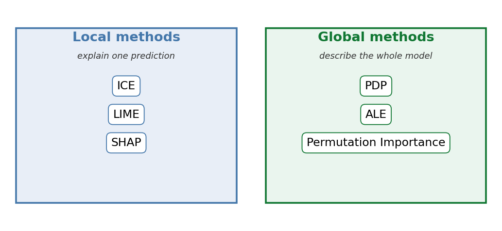
Throughout this deck we use the California housing dataset and a RandomForestRegressor trained on it.
MedInc, HouseAge, AveRooms, AveBedrms, Population, AveOccup, Latitude, Longitude.from sklearn.datasets import fetch_california_housing
from sklearn.ensemble import RandomForestRegressor
from sklearn.model_selection import train_test_split
X, y = fetch_california_housing(return_X_y=True, as_frame=True)
X_tr, X_te, y_tr, y_te = train_test_split(X, y, random_state=42)
model = RandomForestRegressor(n_estimators=200, max_depth=12,
random_state=42, n_jobs=-1).fit(X_tr, y_tr)A Partial Dependence Plot (PDP) shows the average relationship between a feature and the prediction. But the average can hide:
Idea: show one line per instance instead of averaging.
For each instance \(\mathbf{x}^{(i)} = (x_1^{(i)}, \dots, x_p^{(i)})\), we hold every feature fixed except \(X_j\). We then sweep \(X_j\) across a grid of values \(\{v_1, \dots, v_K\}\) and record the model’s predictions:
\[ \text{ICE}^{(i)}_j(v) = \widehat{f}\!\left(v,\, \mathbf{x}^{(i)}_{-j}\right) \]
Plotting these curves gives one line per instance.
Centered ICE (c-ICE) anchors curves at a reference point \(a\) to compare shapes more easily:
\[ \text{c-ICE}^{(i)}_j(v) \;=\; \widehat{f}\!\left(v, \mathbf{x}^{(i)}_{-j}\right) \;-\; \widehat{f}\!\left(a, \mathbf{x}^{(i)}_{-j}\right) \]
The PDP is just the average of the ICE curves.
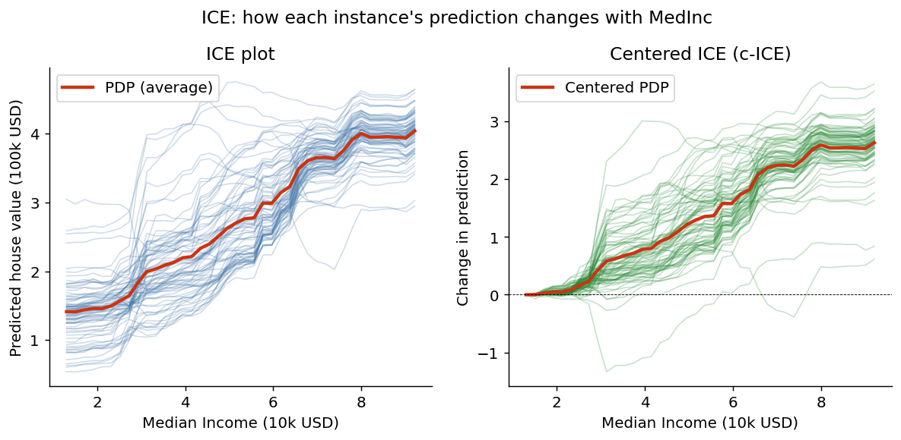
MedInc, suggesting limited interaction here.scikit-learn ships ICE/PDP in sklearn.inspection:
from sklearn.inspection import PartialDependenceDisplay
import matplotlib.pyplot as plt
fig, ax = plt.subplots(figsize=(6, 4))
PartialDependenceDisplay.from_estimator(
model, X_tr, features=["MedInc"],
kind="both", # "both" = ICE lines + average PDP
subsample=80, # subsample for clarity
centered=True, # produce c-ICE
ax=ax,
)
plt.show()Other packages: PiML, PDPbox (Python) and iml, pdp, ICEbox (R).
We want an answer to: “Why did the black-box model predict 0.83 for this instance?”
Idea (Ribeiro, Singh & Guestrin, 2016): in a small neighbourhood, even a very complex function looks roughly linear. So fit a simple, interpretable model — a sparse linear model or a shallow tree — that is locally faithful to the black box.
The explanation for instance \(\mathbf{x}\) is the model \(g\) from a family \(G\) of interpretable models that minimises:
\[ \text{explanation}(\mathbf{x}) \;=\; \arg\min_{g \in G}\; \underbrace{L\!\left(\widehat{f},\, g,\, \pi_{\mathbf{x}}\right)}_{\text{local fidelity}} \;+\; \underbrace{\Omega(g)}_{\text{simplicity}} \]
The LIME algorithm:
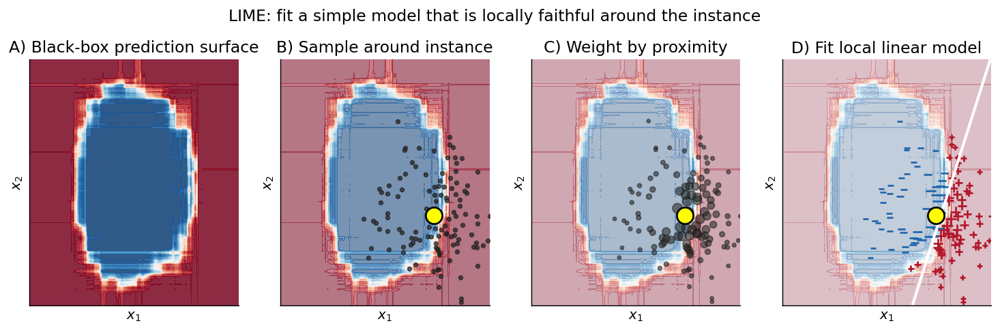
import lime
import lime.lime_tabular
explainer = lime.lime_tabular.LimeTabularExplainer(
training_data=X_tr.values,
feature_names=X_tr.columns.tolist(),
mode="regression",
discretize_continuous=True,
)
exp = explainer.explain_instance(
data_row=X_te.iloc[0].values,
predict_fn=model.predict,
num_features=6,
)
exp.show_in_notebook(show_table=True) # or exp.as_pyplot_figure()Packages: lime (tabular, text, image), eli5, interpret (Microsoft InterpretML).
LIME gives a local linear approximation, but its coefficients have no theoretical guarantees: change the kernel width and the explanation may change.
SHAP (Lundberg & Lee, 2017) borrows the Shapley value from cooperative game theory: a unique attribution scheme satisfying a small set of natural axioms.
Treat each feature as a “player” cooperating to produce the prediction \(\widehat{f}(\mathbf{x})\). The contribution of feature \(j\) is its Shapley value:
\[ \phi_j \;=\; \sum_{S \subseteq F \setminus \{j\}} \frac{|S|!\,(|F| - |S| - 1)!}{|F|!} \left[\, v(S \cup \{j\}) \;-\; v(S) \,\right] \]
where \(v(S)\) is the model’s expected prediction when only the features in \(S\) are known.
Axioms uniquely characterising Shapley values:
Exact Shapley values cost \(\mathscr{O}(2^p)\) → SHAP provides efficient estimators:
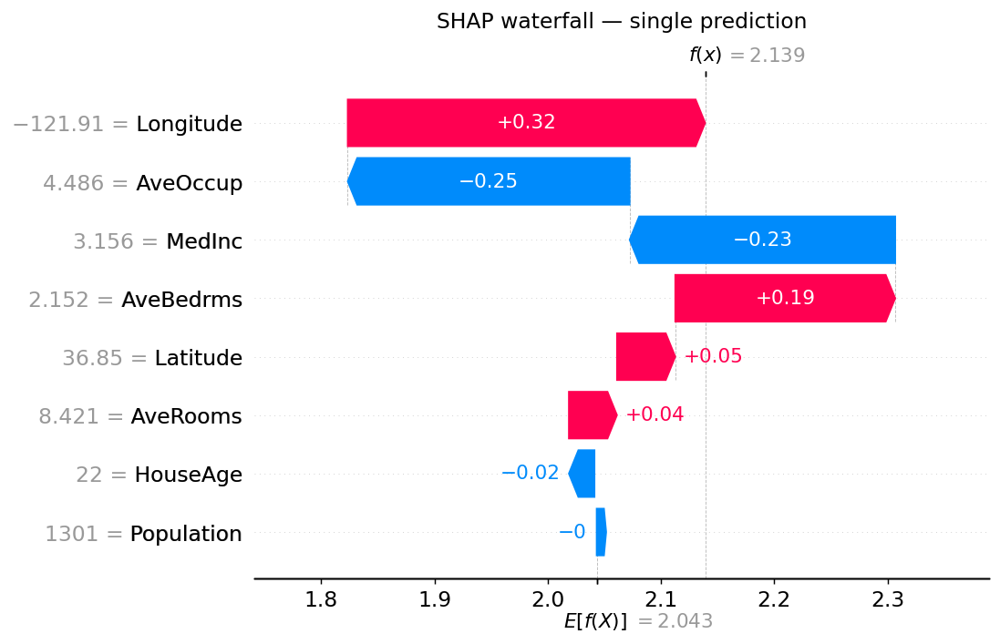
A waterfall plot decomposes a single prediction \(\widehat{f}(\mathbf{x})\) from \(\mathbb{E}[\widehat{f}(X)]\) (bottom) to the actual value (top), one feature at a time. Red pushes up, blue pushes down.
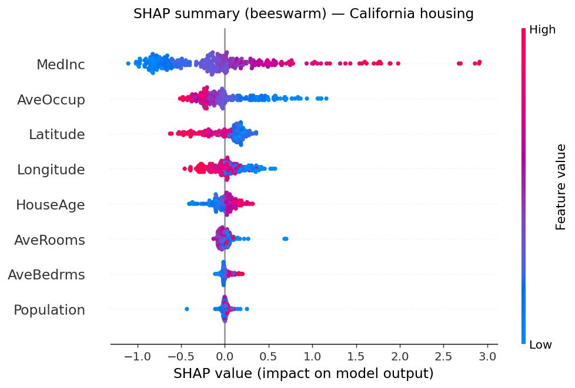
The beeswarm plot stacks SHAP values across many instances. Each row is a feature, each dot an instance; colour encodes the original feature value.
→ MedInc dominates: high incomes (red) push predictions up; low incomes pull them down.
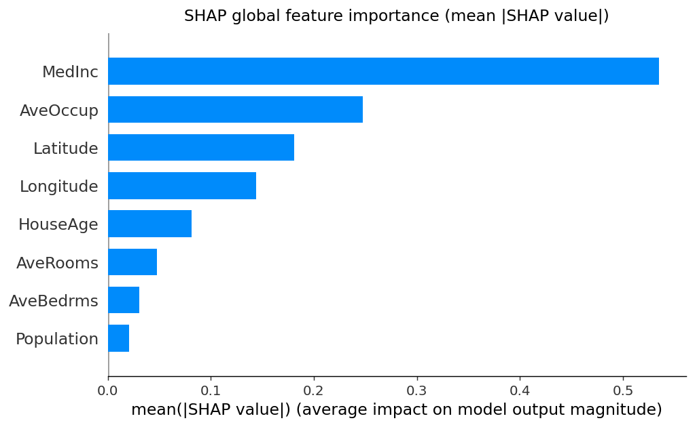
import shap
# TreeSHAP — exact and fast for tree models
explainer = shap.TreeExplainer(model)
shap_values = explainer(X_te) # an Explanation object
# Single prediction
shap.plots.waterfall(shap_values[0])
# Global summary
shap.plots.beeswarm(shap_values)
shap.plots.bar(shap_values) # mean |SHAP| per feature (above)
# Model-agnostic alternative
kexp = shap.KernelExplainer(model.predict, shap.sample(X_tr, 100))Packages: shap, also wrapped by interpret and alibi.
The simplest answer to “How does feature \(X_j\) affect predictions on average?”: fix every other feature at its observed values and average over them.
Friedman (2001) introduced PDPs as a tool to interpret gradient-boosted models.
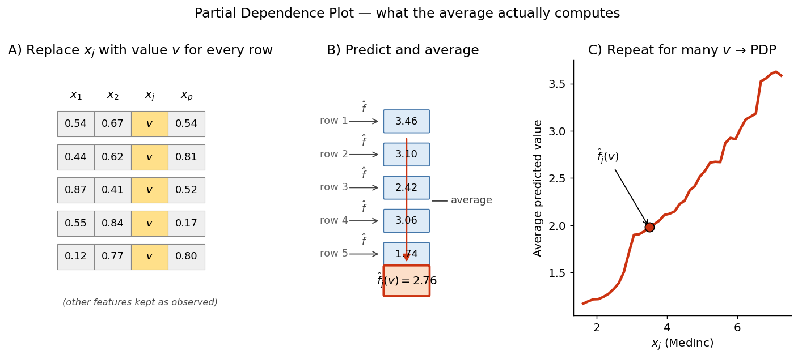
The partial dependence of the prediction on a subset of features \(X_S\) is:
\[ \widehat{f}_S(\mathbf{x}_S) \;=\; \mathbb{E}_{X_C}\!\left[\, \widehat{f}(\mathbf{x}_S,\, X_C) \,\right] \;\approx\; \frac{1}{n} \sum_{i=1}^{n} \widehat{f}\!\left(\mathbf{x}_S,\, \mathbf{x}_C^{(i)}\right) \]
where \(C = \{1,\dots,p\}\setminus S\) are the “other” features.
The PDP is the mean of the ICE curves. It can be plotted in 1-D (one feature) or 2-D (an interaction). It assumes feature \(X_S\) is independent of \(X_C\) — when that fails, the average is taken over impossible combinations and the curve becomes misleading.
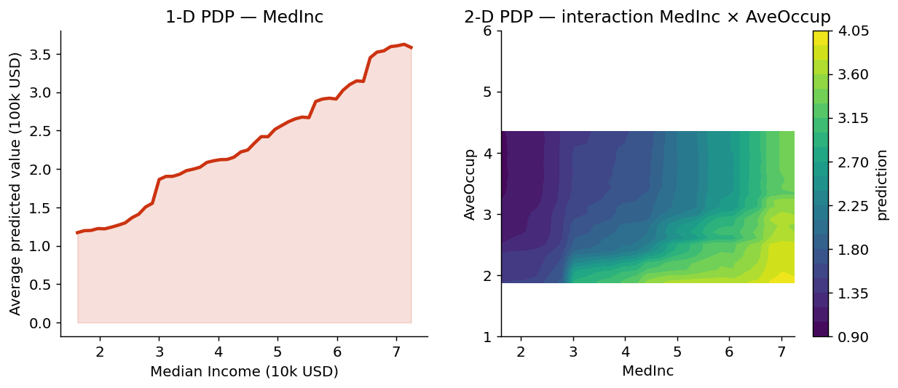
MedInc, then flattens.MedInc increases price strongly; the joint effect is visible as the diagonal gradient.Packages: sklearn.inspection, PDPbox, PiML, interpret.
PDPs break when features are correlated, because they evaluate the model at impossible feature combinations (e.g. a high Latitude with a low Longitude — outside California!).
ALE plots (Apley & Zhu, 2020) sidestep the problem: instead of averaging predictions, they average local differences of the prediction within small bins of the feature.
Partition the range of \(X_j\) into \(K\) quantile bins \(\{(z_{k-1}, z_k]\}\). For each bin compute the average local effect:
\[ \widehat{\text{LE}}_k \;=\; \frac{1}{n_k} \sum_{i\,:\,x_j^{(i)} \in (z_{k-1}, z_k]} \left[\, \widehat{f}(z_k,\, \mathbf{x}^{(i)}_{-j}) \,-\, \widehat{f}(z_{k-1},\, \mathbf{x}^{(i)}_{-j}) \,\right] \]
The ALE is the cumulative sum of these local effects, centered to have mean 0:
\[ \widehat{\text{ALE}}_j(x_j) \;=\; \sum_{k\,:\,z_k\,\le\,x_j} \widehat{\text{LE}}_k \;-\; c \]
The key insight: each \(\widehat{\text{LE}}_k\) only uses data inside the bin, so we never extrapolate outside the data manifold.
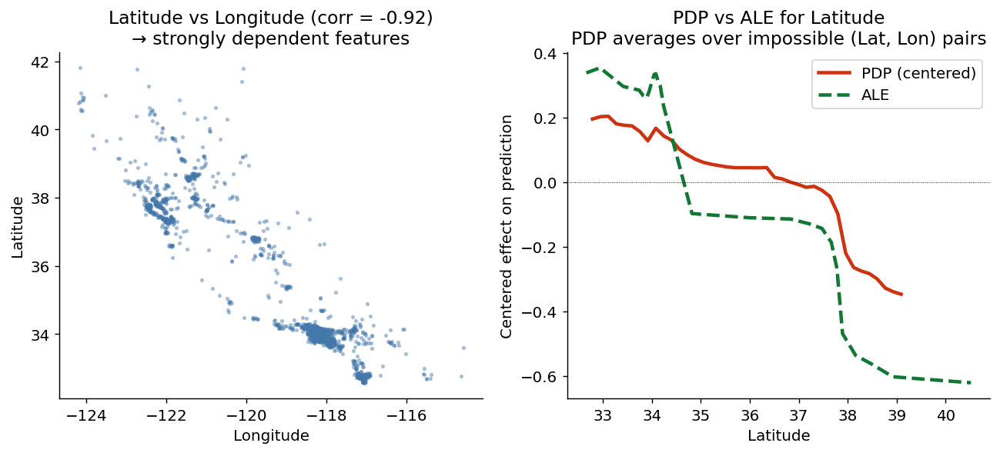
Left: Latitude and Longitude are strongly correlated (California’s shape). Right: PDP and ALE for Latitude disagree — ALE shows stronger location effects because it does not waste mass on impossible (Lat, Lon) combinations.
The most popular package is PyALE or alibi:
# Option A — alibi
from alibi.explainers import ALE, plot_ale
ale = ALE(model.predict, feature_names=X_tr.columns.tolist())
exp = ale.explain(X_tr.values)
plot_ale(exp, features=["Latitude"])
# Option B — PyALE
from PyALE import ale
ale_eff = ale(X=X_tr, model=model, feature=["Latitude"],
grid_size=30, include_CI=True)Packages: alibi, PyALE, interpret (partially); R has ALEPlot and iml.
A direct, model-agnostic measure of how much the model depends on a feature:
If we destroy the information in feature \(X_j\) by randomly shuffling its values, how much worse does the model get?
Introduced by Breiman (2001) for random forests and generalised by Fisher, Rudin & Dominici (2019) for any model.
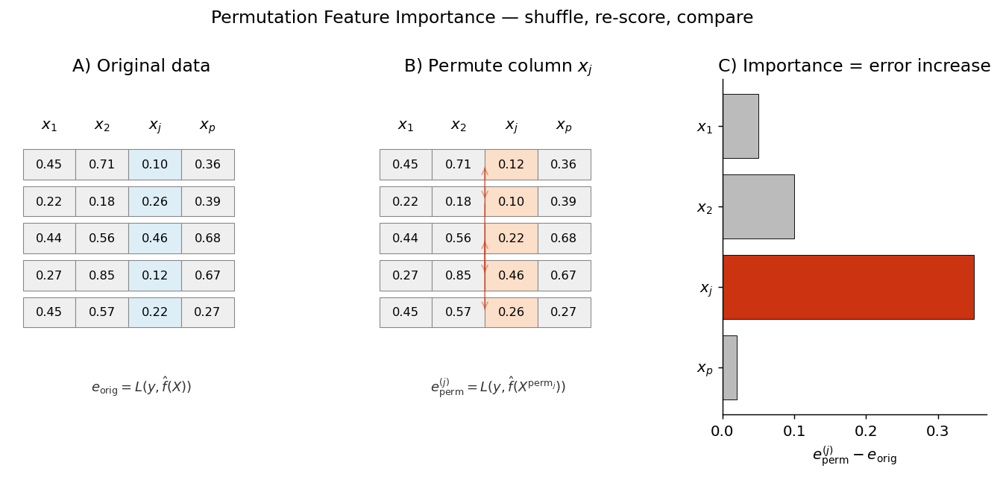
Algorithm:
Repeat the shuffle several times and average to reduce variance.
Watch out: when features are correlated, permuting one creates unrealistic instances; importance can be inflated or split across correlated features.
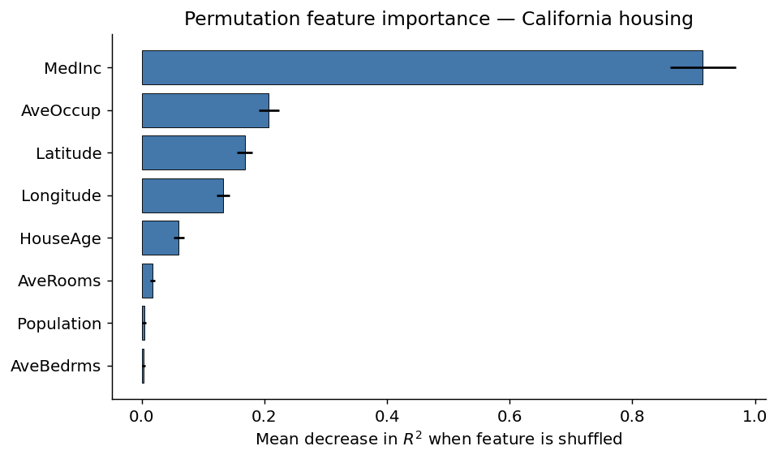
MedInc is by far the most important feature: shuffling it costs ~ 0.9 in \(R^2\). AveOccup, Latitude and Longitude follow.
from sklearn.inspection import permutation_importance
import pandas as pd
result = permutation_importance(
model, X_te, y_te,
n_repeats=20,
scoring="r2",
random_state=42,
n_jobs=-1,
)
importances = pd.Series(result.importances_mean,
index=X_te.columns).sort_values(ascending=False)
print(importances)Packages: sklearn.inspection, eli5.show_weights, rfpimp (handles correlated features via “drop-column” importance).
| You want to… | Use |
|---|---|
| Explain one prediction | SHAP (preferred), LIME |
| See per-instance feature curves | ICE |
| Average effect of a feature | PDP (independent features) |
| Average effect with correlated features | ALE |
| Rank features by importance | Permutation Importance (or mean \(|\text{SHAP}|\)) |
| Global summary of a model | SHAP summary + PFI + PDP/ALE |
Best practice: combine several methods — they answer slightly different questions.